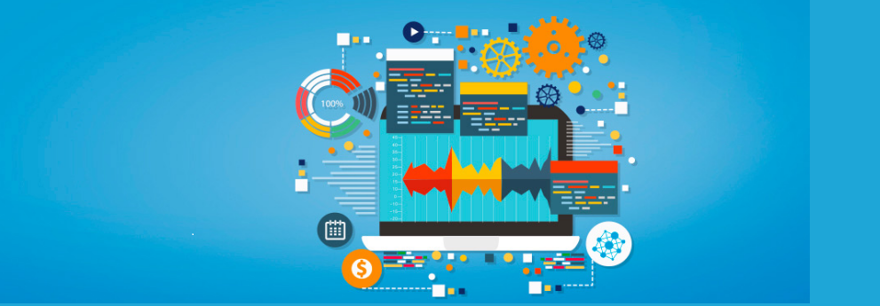
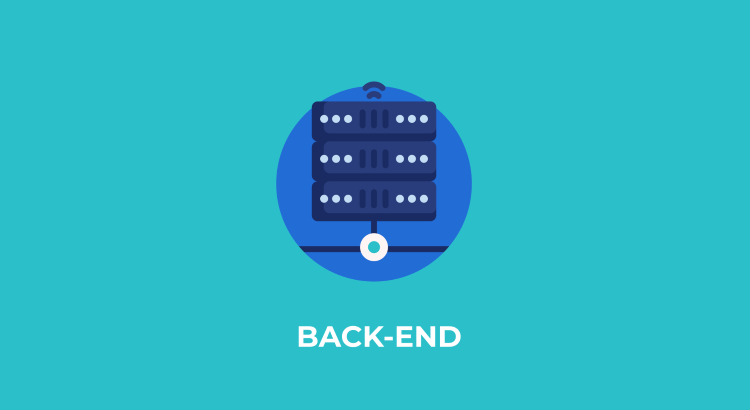

Creamos tu futuro a través del conocimiento 💻
Marketing Digital

Es el perfil de tener un conjunto de estrategias en publicidad, que se llevan a cabo en los medios digitales,para cumplir sus objetivos de venta.
Data Analytics
Es un perfil profesional que interpreta los datos y establece estrategias dentro de una empresa. Recopilan datos a la vez que analizarlos de forma estadística.
Diseño UX / UI
UX (User Experience) y UI (User Interface) uno hace referencia a la experiencia y sensación del usuario, el otro está dirigido hacia un lado más racional de la navegación.
Data Science
Un data scientist es un experto encargado de estructurar enormes bases de datos y aplica sobre ellas sus conocimientos para recopilar y procesar la información que contienen.
Front-End
El desarrollador front-end es el profesional encargado de la codificación del soporte visual de una plataforma web; (de todo aquello que puedes ver en tu explorador) haciendo que su diseño sea intuitivo y atractivo.
Back-End
El desarrollador back-end trabaja del lado servidor y es aquel que trabaja la arquitectura interna de una web o aplicación móvil. es la parte o rama del desarrollo web encargada de que toda la lógica de una página funcione.
¿Por qué estudiar programación?

Te garantiza un trabajo 😀
La programación es una de las profesiones que tiene mayores expectativas de crecimiento a nivel mundial. Se requiere cierto nivel de abstracción, lógica y buen gusto para crear un buen programa. Ya sea en Argentina o en cualquier rincón del mundo, de manera presencial o freelance, un programador siempre tendrá trabajo. Hoy en día todas las áreas del mercado necesitan programadores para llevar a cabo sus proyectos. Puedes elegir dónde trabajar, si preferís pequeñas o grandes empresas, si querés realizar un proyecto de manera independiente, etc. Ante la gran cantidad de demanda laboral, muchos no profesionales se ofrecen para empleos referidos a la tecnología. Sin embargo, no son competencia para los profesionales. Estudiar programación te permitirá posicionarte bien en el mercado, como un profesional. Es mayor la demanda de programadores que la disponibilidad de los mismos.

No es necesario un título universitario 🥇
Muchos trabajos de programación no requieren de un título universitario, sino más bien importa las habilidades de programación que uno posee. Muchas de las empresas de TI (tecnología) optan por tomar sus propias pruebas de admisión para asegurarse de que están contratando a alguien capaz y con los conocimientos que ellos efectivamente requieren. Es una profesión que no para de crecer, y su constante complejización garantiza un futuro laboral. Es un trabajo dinámico, que te permite utilizar tu creatividad e innovar constantemente. No es una disciplina en la que puedas estancarte, ya que requiere una constante actualización y aprendizaje.
El arte de crear 🎨
Lo mejor de la tecnología es que está cambiando y evolucionando constantemente. Estudiar es solo el primer paso para sumarte a un mundo lleno de oportunidades y en constante cambio. Siempre vas a estar aprendiendo cosas nuevas y muy interesantes. Si además te mueve la curiosidad, jamás te vas aburrir. Programar, es también diseñar soluciones a los problemas que enfrentamos como sociedad explotando al máximo las posibilidades que nos ofrece la tecnología. Si eres creativo, puedes hacer realidad lo que quieras.